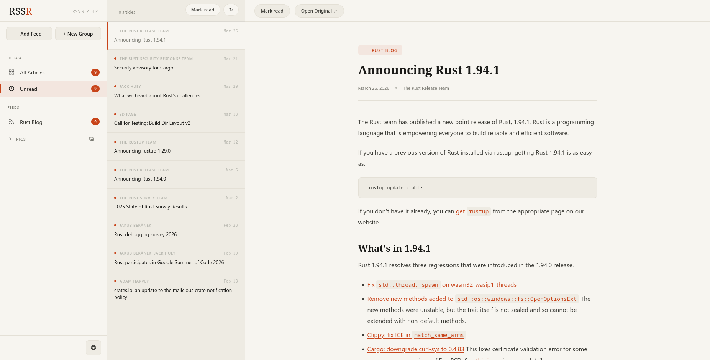
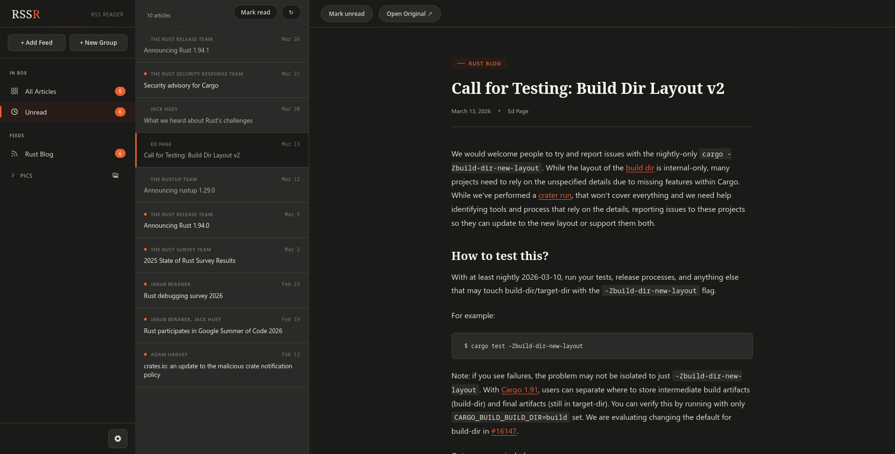
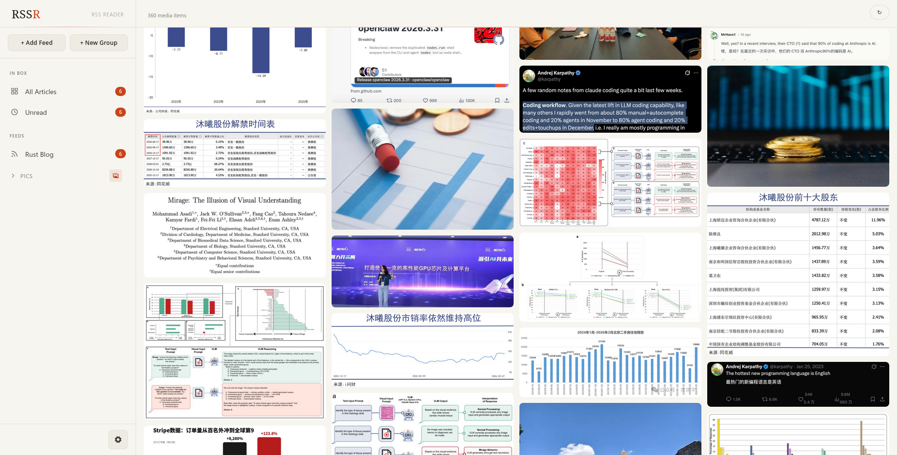
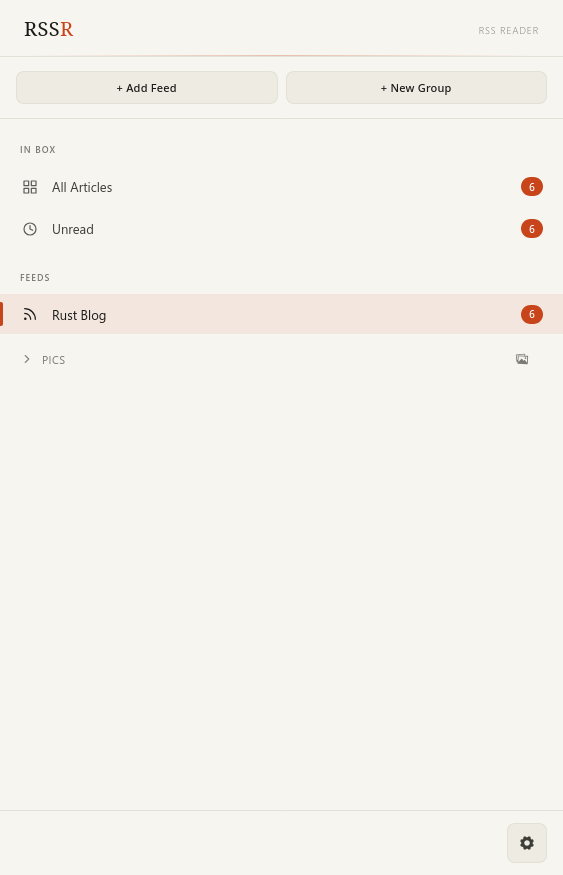
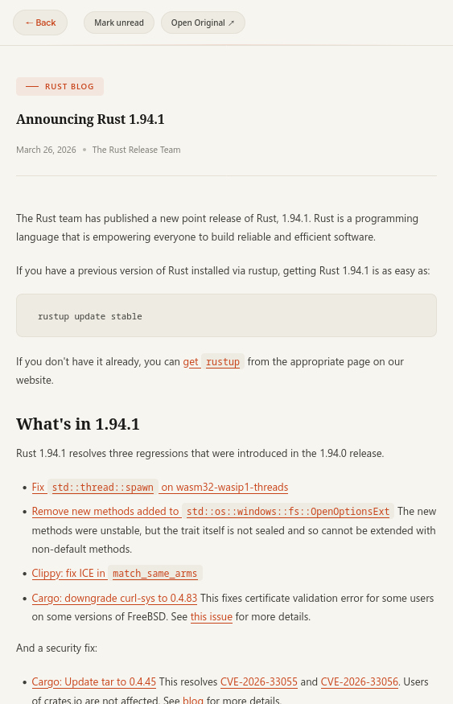
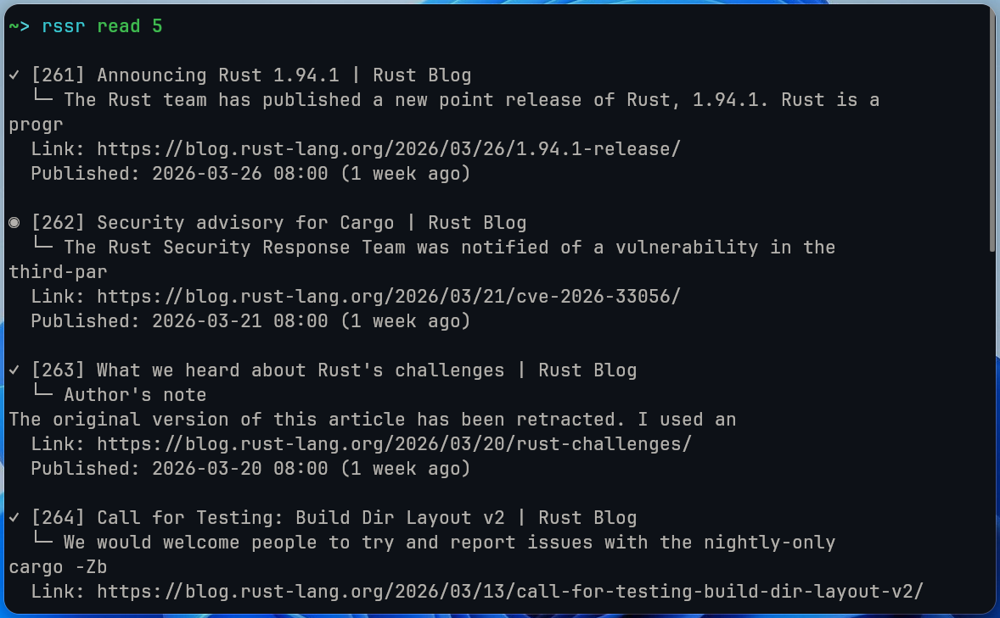

A modern RSS and Atom feed reader with a CLI and a polished web UI — no accounts, no cloud sync, no noise. Just your feeds, right where you want them.

Every part of RSSR is built around keeping your reading experience fast, local, and distraction-free.
Sidebar, article list, and reader — everything visible at once on desktop. On mobile, switch between views with a tap. The interface adapts to your screen size naturally.
Switch to dark mode for comfortable reading in any lighting. The UI transitions smoothly between themes — every element is designed with both light and dark aesthetics in mind.

Images from your feeds are laid out in a Pinterest-style masonry grid. Preview and browse media without leaving your reader — perfect for blogs and design-focused feeds.

Whether you're reading on a phone or tablet, the interface collapses gracefully into single-column views — swipe between the sidebar, article list, and reader.


Add, update, and manage feeds from the command line with rssr add, rssr update, rssr read, and more. Full read/unread tracking from the terminal — no browser needed.

Keep your feeds organized by grouping them into categories. Create media-specific groups for image-rich content, or standard groups for blogs, news, and podcasts.
One command to build, one command to start reading.
Single binary, no external dependencies.
cargo build --release
Subscribe to any RSS or Atom feed by URL.
rssr add https://example.com/feed.xml
Use the CLI or start the web server.
rssr serve # then open http://localhost:8080
Grab the source, build it, and start reading — all in under a minute.
View on GitHub